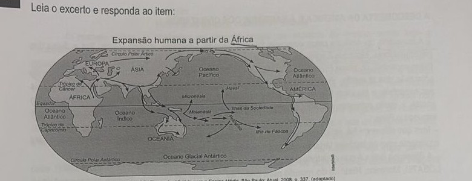
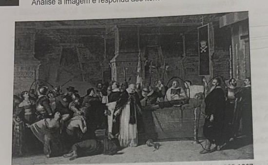
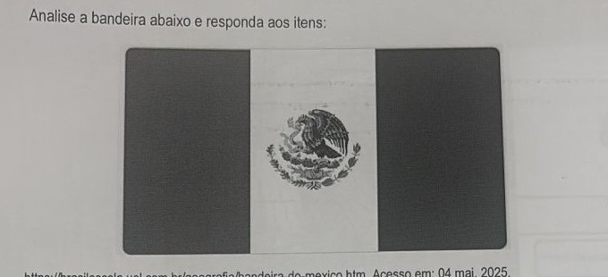
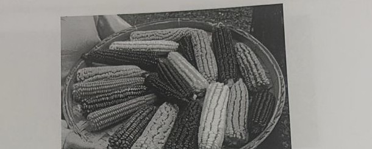

Professora: Bruna
Leia o trecho abaixo e responda ao item:
No momento de sua descoberta, a América apresentava uma grande heterogeneidade etnográfica. A escala civilizatória era muito variada desde as sociedades organizadas política e economicamente com um forte e bem estruturado aparelho estatal até as tribos de pescadores.
BRUIT, H. H. Bartolomé de Las Casas e a Simulação dos Vencidos: Ensaio sobre a conquista hispânica da América. Campinas-SP: Editora Unicamp, 1995, p.42.
Bartolomeu de Las Casas foi um frade espanhol, que viveu no século XVI. No excerto, o que esta figura histórica aponta como sendo uma característica da civilização?
Segundo o excerto, Las Casas aponta a existência de uma organização política e econômica estruturada, com um aparelho estatal bem desenvolvido, como a característica que marca uma sociedade como "civilizada" (em contraste com as tribos de pescadores, tidas como menos organizadas nesse critério). O trecho evidencia, assim, que a América pré-colombiana não era etnograficamente homogênea: havia sociedades estatais complexas (como incas e astecas) convivendo, no mesmo continente, com povos organizados de forma bem mais simples — uma diversidade que os europeus, com sua visão etnocêntrica, muitas vezes ignoravam ao generalizar os povos americanos como "selvagens".
Leia o excerto e responda ao item:

VICENTINO, Claudio; DORIGO, Gianpaolo. História para o Ensino Médio. São Paulo: Atual, 2008. p. 337. (adaptado)
A dispersão dos seres humanos nos espaços da terra pode ser conhecida não apenas pela rara presença de partes de esqueletos fossilizados e pela análise genética, mas, sobretudo, pelos vestígios da cultura material - pegadas, restos de fogueiras, artefatos líticos e cerâmica – e produções denominadas artísticas, como as pinturas rupestres, as esculturas e os monumentos megalíticos.
A partir desta produção, explique a relação havida entre a formação da História, enquanto ciência, e o estudo de cultura material.
A História, enquanto ciência, não depende apenas de documentos escritos para reconstruir o passado — e é justamente o estudo da cultura material (pegadas, fogueiras, artefatos líticos, cerâmica, pinturas rupestres etc.) que permite investigar períodos e povos que não deixaram registros textuais, como é o caso da Pré-História e da própria expansão humana pelo planeta. Esse tipo de vestígio é a principal fonte de conhecimento para a Arqueologia e para a História mais antiga da humanidade, ampliando o alcance da disciplina histórica para muito além do que os documentos escritos poderiam sozinhos revelar — sem esses vestígios materiais, praticamente toda a história humana anterior à escrita seria inacessível.
Leia o trecho abaixo e responda ao item:
A DESCOBERTA DA AMÉRICA E A BARBÁRIE DOS CIVILIZADOS
– A conquista da América pelos europeus foi uma tragédia sangrenta. A ferro e fogo! Era a divisa dos cristianizadores. Mataram à vontade, destruíram tudo e levaram todo ouro que havia.
Outro espanhol, de nome Pizarro, fez no Peru coisa idêntica com os incas, um povo de civilização muito adiantada que lá existia. Pizarro chegou e disse ao imperador inca que o papa havia dado aquele país aos espanhóis e ele viera tomar conta. O imperador inca, que não sabia quem era o papa, ficou de boca aberta, e muito naturalmente não se submeteu. Então Pizarro, bem armado de canhões conquistou e saqueou o Peru.
– Mas que diferença há, vovó, entre estes homens e aquele Átila ou aquele Gengis-Cã que marchou para o ocidente com os terríveis tártaros, matando, arrasando e saqueando tudo?
– A diferença única é que a história é escrita pelos ocidentais e por isso torcida a nosso favor.
LOBATO, Monteiro. História do mundo para crianças. Capítulo LX.
Em relação ao domínio exercido por Francisco Pizarro sob a sociedade Inca, explique com suas palavras a fala final do texto: "A diferença única é que a história é escrita pelos ocidentais e por isso torcida a nosso favor."
Monteiro Lobato compara a violência de Pizarro contra os incas com a de conquistadores tradicionalmente retratados como "bárbaros" na historiografia ocidental, como Átila e Gengis Khan — e conclui que, em essência, as ações são equivalentes: matança, destruição e saque. A diferença é que a narrativa histórica sobre esses eventos foi majoritariamente escrita por europeus e seus descendentes, que tendem a legitimar, minimizar ou até heroicizar as conquistas realizadas por outros europeus (como Pizarro), enquanto os povos não-europeus que agiram de forma semelhante são rotulados de "bárbaros" ou "selvagens". Trata-se, portanto, de uma crítica ao eurocentrismo historiográfico: quem escreve a história tem o poder de moldar como os eventos e seus agentes são julgados pela posteridade.
Leia o excerto abaixo e responda ao item:
História da pintura, história do mundo
O homem nunca se contentou em apenas ocupar os espaços do mundo; sentiu logo a necessidade de representá-los, reproduzi-los em imagens, formas, cores, desenhá-los e pintá-los na parede de uma caverna, nos muros, numa peça de pano, de papel, numa tela de monitor. Acompanhar a história da pintura é acompanhar um pouco a história da humanidade. É, ainda, descortinar o espaço íntimo, o espaço da imaginação, onde podemos criar as formas que mais nos interessam, nem sempre disponíveis no mundo natural. Um guia notável para aprender a ler o mundo por meio das formas com que os artistas o conceberam é o livro História da Pintura, de uma arguta irmã religiosa, da ordem de Notre Dame, chamada Wendy Beckett. Ensina-nos a ver em profundidade tudo o que os pintores criaram, e a reconhecer personagens, objetos, fatos e ideias do período que testemunharam.
A autora começa pela Pré-História, pela caverna subterrânea de Altamira, em cujas paredes, entre 15000 e 12000 a.C., toscos pincéis de caniços ou cerdas e pó de ocre e carvão deixaram imagens de bisões e outros animais.
(BATISTA, Domenico, inédito)
Relacione a tese central presente neste texto com a produção de pintura rupestre no sítio arqueológico da Serra da Capivara, estudado, quando analisamos em sala de aula o debate historiográfico sobre o povoamento do continente americano.
A tese central do texto é que "acompanhar a história da pintura é acompanhar um pouco a história da humanidade" — ou seja, as produções artísticas visuais funcionam como registro e fonte histórica sobre os povos que as criaram, revelando quem eram, o que pensavam e como viviam. Isso se relaciona diretamente com as pinturas rupestres encontradas no sítio arqueológico da Serra da Capivara (Piauí): essas pinturas são usadas como uma das principais evidências no debate historiográfico sobre o povoamento das Américas, pois pesquisadores brasileiros (como Niède Guidon) defendem, a partir da datação desses vestígios, que a presença humana no continente americano seria muito mais antiga do que a tradicional teoria da rota migratória pelo Estreito de Bering sugere. Assim como o texto argumenta, essa produção artística antiga funciona como uma "janela" para reconstruir a história humana num período sem registros escritos.
Analise a imagem e responda aos itens:

Luis Montero. Os funerais do inca Atahualpa. Óleo sobre tela, 1865-1867.
a) A pintura é contemporânea ou não ao evento que ela representa? Justifique com um elemento presente no registro.
b) Descreva os três principais quadrantes presentes na imagem. Qual é o ponto principal que se percebe após a decomposição da imagem?
a) A pintura não é contemporânea ao evento que retrata. A execução do inca Atahualpa por Francisco Pizarro ocorreu em 1533, mas a obra de Luis Montero foi pintada entre 1865 e 1867 — mais de três séculos depois. A própria ficha técnica da obra, informando a data de produção (1865-1867), já é o elemento que evidencia essa distância temporal entre o fato histórico e a representação artística, que se enquadra no estilo romântico/academicista do século XIX, retratando um episódio do passado colonial com um olhar já bastante posterior aos fatos.
b) Numa análise de composição por quadrantes (dividindo a imagem em áreas), costuma-se identificar: um quadrante central, com a figura do religioso/padre conduzindo o ritual de catequização; um quadrante lateral com a presença de soldados/guardas espanhóis em posição de controle e dominação sobre a população indígena; e outro quadrante com a figura de destaque (autoridade/comandante espanhol, associado a Pizarro) supervisionando a cena. O ponto principal que emerge dessa decomposição é a assimetria de poder representada: de um lado a imposição religiosa e militar espanhola, do outro a submissão do povo inca, retratando visualmente a dominação colonial.
Analise a bandeira abaixo e responda aos itens:

Disponível em https://brasilescola.uol.com.br/geografia/bandeira-do-mexico.htm. Acesso em: 04 mai. 2025.
a) Aponte a sociedade a qual faz referência o símbolo presente na imagem.
b) Explique o mito de origem presente na bandeira acima representada.
a) O símbolo do brasão (águia sobre um cacto, devorando uma serpente) faz referência ao povo Asteca (Mexica), fundador da cidade de Tenochtitlán, atual Cidade do México.
b) Segundo a lenda de fundação asteca, o deus Huitzilopochtli orientou seu povo, então nômade, a fundar sua cidade no exato local onde encontrassem uma águia pousada sobre um cacto (nopal), devorando uma serpente — esse seria o sinal divino indicando o local escolhido pelos deuses. Após anos de peregrinação, os astecas encontraram esse sinal numa ilha do lago Texcoco e ali fundaram Tenochtitlán, em 1325. Esse mito de origem é o que está representado até hoje no brasão central da bandeira mexicana.
Leia o trecho abaixo e responda aos itens:

Disponível em https://alavoura.com.br/agricultura/cultivares/estudo-mapeia-29-tipos-diferentes-no-brasil-e-uruguai/. Acesso em: 04 mai. 2025.
a) A imagem aponta para um alimento típico de qual continente?
b) Aponte a importância do consumo deste alimento para as sociedades que primeiro o domesticaram.
a) O milho é um alimento originário e típico do continente americano, domesticado a partir de uma planta silvestre (o teosinto) na região da Mesoamérica (atual México), há milhares de anos.
b) O milho foi um dos pilares alimentares das grandes civilizações mesoamericanas (como maias e astecas), sendo tão fundamental que ocupava um papel central inclusive na mitologia desses povos. Sua domesticação e cultivo em larga escala permitiram a geração de excedente alimentar, o que possibilitou a fixação das populações em um território, o crescimento demográfico e, consequentemente, o desenvolvimento de sociedades mais complexas, com cidades, hierarquias sociais e organização política centralizada — um papel análogo ao que o trigo teve no Oriente Médio ou o arroz no Sudeste Asiático.